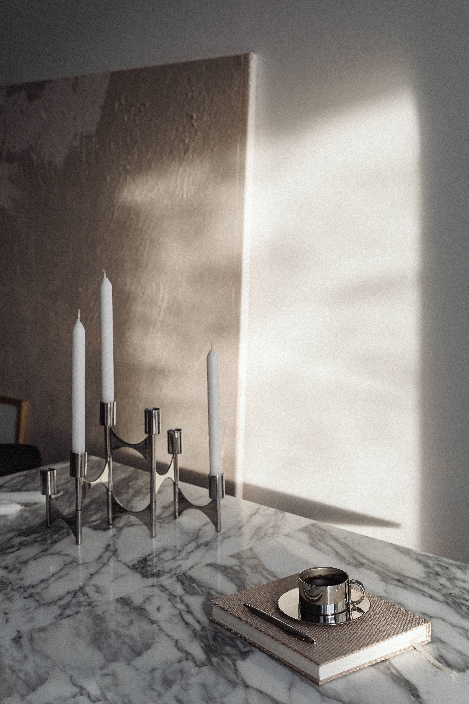

Sincérité architecturale.
Lire un lieu avant de le transformer. Une hauteur sous plafond garde son ampleur, jamais masquée. L'architecture parle d'elle-même, sans avoir à se déguiser.

Créer des intérieurs élégants, intemporels et parfaitement pensés pour révéler le potentiel unique de chaque lieu.
Je m'appelle Mohamed Maray. J'ai fondé Maison Maray parce que je voulais dessiner des intérieurs qui résistent au temps, et qui ressemblent vraiment à ceux qui les habitent.
Avant le moindre trait, je cherche à comprendre comment vous vivez. Vos heures, vos rituels, vos objets, ce que vous tenez à garder et ce que l'on enlève. Tout part de là.
Je travaille principalement sur des projets résidentiels haut de gamme. De la première rencontre à la livraison, je reste votre interlocuteur unique : conception, maîtrise d'œuvre, choix des matières, mobilier sur-mesure, jusqu'à la dernière finition.
Ce que je cherche, ce n'est pas un effet ; c'est une beauté qui dure. Des intérieurs que l'on traverse sans s'en lasser, qui apaisent et inspirent à la fois, et qui prennent de la valeur sur le long terme.
Une résidence principale, un pied-à-terre parisien ou un projet d'investissement : la même exigence à chaque fois, la même attention au détail. Basé à Paris, j'interviens également en France et à l'étranger, pour des intérieurs sobres, architecturaux, intemporels.
Lire un lieu avant de le transformer. Une hauteur sous plafond garde son ampleur, jamais masquée. L'architecture parle d'elle-même, sans avoir à se déguiser.
Aucune matière ne s'invite par hasard. Chacune répond à un usage, à une lumière, à une intention précise. La beauté d'un intérieur tient autant à ce qu'il refuse qu'à ce qu'il accepte.
Un projet réussi est celui qu'on ne remarque pas. Pas parce qu'il est neutre, mais parce que tout y est exactement à sa place. Au point qu'on n'imagine plus le lieu autrement.

Une équipe de chasseurs partenaires, parisiens et discrets. La plupart de nos opérations off-market viennent d'eux.

Deux équipes d'artisans qui nous accompagnent depuis des années. Choisies pour leur exigence, leur précision, et le savoir-faire qu'elles signent sur chaque projet.

Une équipe de conciergerie partenaire, dédiée à la gestion locative haut de gamme et à la maintenance continue des biens livrés.